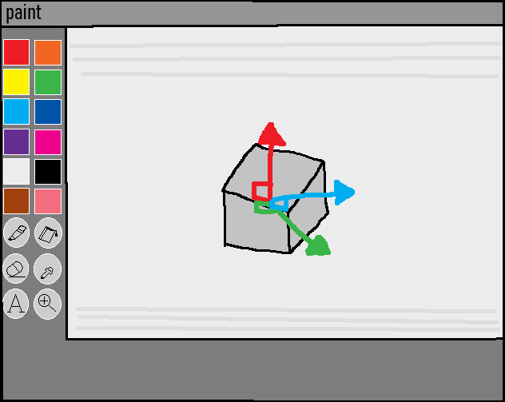

I love Endicopia
8/30/26
its true
I started playing Endacopia today and yeah.
I fucking love it.
I'm only on Chapter 2 right now, so this isn't really a review or anything. I haven't finished the game, I have no idea where the story is going, and I'm actively trying to avoid looking anything up until I'm done.
But so far this game is exactly my kind of weird.
It has this really strange mix of cute, funny, uncomfortable, and creepy where I genuinely never know what the next room is going to be. Sometimes something happens and all I can really think is "what the fuck am I looking at."
And I mean that as a compliment.
The art is probably one of my favorite parts. Everything has this weird old-computer-game feeling without just being "retro for the sake of being retro." The 2D sprites that look 3D, the animations, the characters, the way things move, everything feels like it belongs to the same weird little world even when the game completely changes what it's doing.
Also Mellow.
I love Mellow.
Look at him.
How could anything possibly go wrong.
I'm sure nothing horrible or deeply confusing will happen to this creature over the next two chapters.
Anyway I'm stopping at Chapter 2 for today because I've been playing for a while and I don't want to burn through the entire thing in one sitting.
I'm probably gonna keep playing tomorrow.
(Edit: its tomorrow, i beat the game lol)
I just want to take a second to appreciate Andyland for actually making this game.
I've been waiting for Endacopia since the demo. For a long time, the full game was just this thing I knew I wanted to play someday, and now I've actually played it from beginning to end. That's a really weird feeling.
And I'm really glad I waited.
There's so much personality in this game, and just how strange the entire world is. Endacopia feels like something that was made because somebody genuinely wanted to make this specific game, rather than something designed by a committee to appeal to as many people as possible.
That's one of my favorite things about it.
Making a game this big takes an insane amount of time and work, and having followed Endacopia since the demo makes seeing the finished thing feel even more special.
So, seriously:
Thank you, Andyland.
Thank you for making Endacopia, thank you for sticking with it long enough to actually finish it, and thank you for making something this fucking weird.
It was worth the wait. :P
BACK TO BLOG